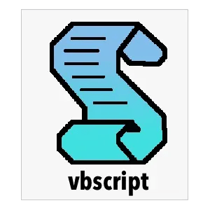

El World Wide Web Consortium, más conocido como W3C, es un consorcio internacional de organizaciones vinculadas a las tecnologías de información que busca promover la evolución de la Red a través del establecimiento de distintas pautas para su estandarización. El propio padre de la Web, Tim Berners-Lee, fundó el W3C con el objetivo de garantizar una Web universalmente accesible, más allá de las diferencias de idioma, navegador, sistema operativo, plataforma, localización geográfica o aptitudes tecnológicas.
Las hojas de estilo en cascada o (Cascading Style Sheets, o sus siglas CSS) hacen referencia a un lenguaje de hojas de estilos usado para describir la presentación semántica (el aspecto y formato) de un documento escrito en lenguaje de marcas. Su aplicación más común es dar estilo a páginas webs escritas en lenguaje HTML y XHTML, pero también puede ser aplicado a cualquier tipo de documentos XML, incluyendo SVG y XUL. La información de estilo puede ser adjuntada como un documento separado o en el mismo documento HTML. En este último caso podrían definirse estilos generales en la cabecera del documento o en cada etiqueta particular mediante el atributo style.

HTML (Lenguaje de Marcas de Hipertexto, del inglés HyperText Markup Language) es el componente más básico de la Web. Define el significado y la estructura del contenido web. Además de HTML, generalmente se utilizan otras tecnologías para describir la apariencia.
"Hipertexto" hace referencia a los enlaces que conectan páginas web entre sí, ya sea dentro de un único sitio web o entre sitios web. Los enlaces son un aspecto fundamental de la Web. Al subir contenido a Internet y vincularlo a las páginas creadas por otras personas, te conviertes en un participante activo en la «World Wide Web» (Red Informática Mundial).
HTML utiliza "marcas" para etiquetar texto, imágenes y otro contenido para mostrarlo en un navegador Web. Las marcas HTML incluyen "elementos" especiales como:

El lenguaje de marcado es un conjunto de códigos que se pueden aplicar en el análisis de datos o la lectura de textos creados por computadoras o personas. El lenguaje XML proporciona una plataforma para definir elementos para crear un formato y generar un lenguaje personalizado.
Un archivo XML se divide en dos partes: prolog y body. La parte prolog consiste en metadatos administrativos, como declaración XML, instrucción de procesamiento opcional, declaración de tipo de documento y comentarios. La parte del body se compone de dos partes: estructural y de contenido (presente en los textos simples).
El diseño XML se centra en la simplicidad, la generalidad y la facilidad de uso y, por lo tanto, se utiliza para varios servicios web. Tanto es así que hay sistemas destinados a ayudar en la definición de lenguajes basados en XML, así como APIs que ayudan en el procesamiento de datos XML
Los lenguajes de scripts pueden realizar diferentes acciones dentro de un entorno de tiempo de ejecución particular, como automatizar la ejecución de tareas, mejorar la funcionalidad del software principal, realizar configuraciones, extraer datos de conjuntos de datos y otros.
Los lenguajes de scripts pueden surgir de dos maneras:
JavaScript (JS) es un lenguaje de programación ligero, interpretado, o compilado justo-a-tiempo (just-in-time) con funciones de primera clase. Si bien es más conocido como un lenguaje de scripting (secuencias de comandos) para páginas web, y es usado en muchos entornos fuera del navegador, tal como Node.js, Apache CouchDB y Adobe Acrobat. JavaScript es un lenguaje de programación basada en prototipos, multiparadigma, de un solo hilo, dinámico, con soporte para programación orientada a objetos, imperativa y declarativa (por ejemplo programación funcional).

VBScript (abreviatura de Visual Basic Script Edition) es un lenguaje interpretado por el Windows Script Host de Microsoft. Su sintaxis refleja su origen como variación del lenguaje de programación Visual Basic. Ha logrado un apoyo significativo por parte de los administradores de Windows como herramienta de automatización, ya que, conjunta y paralelamente a las mejoras introducidas en los sistemas operativos Windows donde opera fundamentalmente, permite más margen de actuación y flexibilidad que el lenguaje batch (o de proceso por lotes) desarrollado a finales de los años 1970 para el MS-DOS.
AJAX, acrónimo de Asynchronous JavaScript And XML (JavaScript asíncrono y XML), es una técnica de desarrollo web para crear aplicaciones web asíncronas. Estas aplicaciones se ejecutan en el cliente, es decir, en el navegador de los usuarios mientras se mantiene la comunicación asíncrona con el servidor en segundo plano. De esta forma es posible interactuar con el servidor sin necesidad de recargar la página web, mejorando la interactividad, velocidad y usabilidad en las aplicaciones.

JSON (JavaScript Object Notation) es un formato ligero de intercambio de datos. JSON es de fácil lectura y escritura para los usuarios. JSON es fácil de analizar y generar por parte de las máquinas. JSON se basa en un subconjunto del lenguaje de programación JavaScript, Estándar ECMA-262 3a Edición - Diciembre de 1999. JSON es un formato de texto completamente independiente del lenguaje, pero que utiliza convenios que resultan familiares a los programadores de lenguajes de la familia C, incluidos C, C++, C#, Java™, JavaScript, Perl, Python y mucho otros. Estas características hacen de JSON un lenguaje de intercambio de datos ideal.

jQuery es una biblioteca multiplataforma de JavaScript, creada inicialmente por John Resig, que permite simplificar la manera de interactuar con los documentos HTML, manipular el árbol DOM, manejar eventos, desarrollar animaciones y agregar interacción con la técnica AJAX a páginas web.

Tecnología que permite ver y oír contenidos que se transmiten desde internet u otra red sin tener que descargar previamente los datos al dispositivo desde el que se visualiza y oye el archivo.
distribución regular a través de Internet de programas de audio grabados previamente, que pueden transferirse a un reproductor portátil de música, para escucharlos en cualquier momento.